Kickstart Programming
著者: Shuntaro Nishizawa, Shibaken28, hiroki-1219, yu1hpa
この資料は長野高専情報技術研究部の新入部員向けの資料です。 新入部員向けにプログラミングの基礎から、Linuxコマンド、Git/GitHubなど様々ことについて記載しています。
もし資料にミスや不明な点等があれば、このリポジトリにIssueとしてご報告ください。
WSL2とは
WSL2(Windows Subsystem for Linux 2)は、Windows10上でLinuxを動作させることができる仕組みです。(LinuxはWindowsと同じOSの一種です。詳細については他の資料を参照してください。)
（J科生はCygwinを学校で導入したと思います。これとWSL2は似ている存在ではありますが、実現方法は全く違います。また、利点はCygwinよりもWSL2のほうが多いです。）
利点としては、以下の例が挙げられます。
- ファイルにアクセスする速度が早い
- 原理上Linuxと100%の互換性がある
- Linuxと互換性があるため、Linuxの機能は全て使える
以上の利点から、ここではWSL2を導入していきます。 （CygwinはWSL2を導入しても使うことができるので、アンインストールする必要はありません。）
WSL2の導入
WSL2を導入していきます。導入はMicrosoftの公式ドキュメントの手順で行っていきます。
1.Linux用Windowsサブシステムを有効にする
Windows上にLinuxディストリビューションをインストールする前に、まず "Linux用Windowsサブシステム"を有効にする必要があります。
はじめに、管理者としてPowerShellを開きます。
Windowsの検索窓からPowerShellと入力し、「管理者として実行する」を選択してください。

選択した後、「このアプリがデバイスに変更を加えることを許可しますか？」と尋ねられるので、「はい」を選択してください。
PowerShellが起動したら、以下のコマンドを実行してください。
dism.exe /online /enable-feature /featurename:Microsoft-Windows-Subsystem-Linux /all /norestart

「操作は正常に完了しました。」と表示されたら、"Linux用Windowsサブシステム"が有効になりました。次の手順に進みましょう。
2.WSL2の実行に関する要件を確認する
WSL2は、以下のシステム要件が必要です。
- x64システムの場合:バージョン1903以降、ビルド18362以上
- ARM64システムの場合:バージョン2004以降、ビルド19041以上
設定からシステム>詳細情報へ進んで、"システムの種類"・"バージョン"・"OSビルド"を 確認してください。

上記のシステム要件を満たしていることを確認できたら、次の手順に進みましょう。
3.仮想マシンの機能を有効にする
WSL2をインストールする前に、"仮想マシンプラットフォーム"を有効にする必要があります。
PowerShellを閉じた場合は、もう一度管理者としてPowerShellを開いてください。
PowerShellで以下のコマンドを実行してください。
dism.exe /online /enable-feature /featurename:VirtualMachinePlatform /all /norestart

「操作が正常に完了しました。」と表示されたら、仮想マシンプラットフォームが有効になりました。
有効化したことを確認したら、コンピュータを再起動してください。コンピュータを再起動しないと、Linux用Windowsサブシステムと仮想マシンプラットフォームは完全に有効化されません。
コンピュータが再起動できたら、次の手順に進みましょう。
4.Linuxカーネル更新プログラムパッケージをダウンロードする
Linuxカーネル更新プログラムパッケージの最新のパッケージをダウンロードします。
"2.WSL2の実行に関する要件を確認する"で確認した"システムの種類"に応じて以下のパッケージをダウンロードしてください。
x64マシン用WSL2 Linux カーネル更新プログラムパッケージ
ARM64マシン用WSL2 Linux カーネル更新プログラムパッケージ
ダウンロードしたら、更新プログラムパッケージを実行します。
エクスプローラーを開いて、ダウンロードフォルダへ進み、"wsl_update_x64.msi"を実行し、更新プログラムパッケージをインストールしてください。（ブラウザから、ファイルを直接実行しても大丈夫です。）

（管理者特権のアクセス許可を求めるメッセージが表示される場合があるので、「はい」を選択して、このインストールを承認してください。）
インストールが完了すると、次のウィンドウが表示されます。

表示されたら、"Finish"を選択し、次の手順に進みましょう。
5.WSL2を既定のバージョンとして設定する
新しいLinuxディストリビューションをインストールする際の規定のバージョンとしてWSL2を設定します。
PowerShellを開いて（今回は管理者としてPowerShellを開く必要はありません） 以下のコマンドを実行してください。
wsl --set-default-version 2

「WSL2との主な違いについては、https://aka.ms/wsl2を参照してください」と表示されたら、WSL2が既定バージョンに設定されました。次の手順に進みましょう。
6.選択したLinuxディストリビューションをインストールする
ディストリビューションとはOSを構築するための必要な諸々のソフトも含めた配布形態のことです。今回は"Ubuntu"を選択します。（他にも、CentOS・KaliLinuxなどたくさんのディストリビューションがあります。）
Microsoft Storeを起動して"Ubuntu"と検索し、Ubuntuを選択してください。

表示されたページの「入手」を選択してください。Ubuntuのインストールが開始されます。 （下の画像では、Ubuntu 20.04 LTSになっていますが、操作は変わりません。）

インストールが完了すると、右下に以下の通知が表示されるので、起動を選択してください。 （スタートメニューからUbuntuを選択して実行しても大丈夫です。）

少し待つと、Ubuntuで使用するユーザーネームとパスワードの設定を求められるので入力してください。
ここで設定したパスワードの使用頻度はかなり多い（ソフトウェアのインストールなど、管理者レベルの操作で必要）ので、必ず覚えておく、またはメモとして取っておくようにしてください。

コマンドが打ち込める状態になったら、WSL2の導入は終了です。これで、Windows10上でLinux（Ubuntu）を扱うことができるようになりました。
WSL2上でUbuntuを使うときはスタートメニューからUbuntuを選択して、実行することで、 使用することができます。（または、自分の好きなターミナルを設定して、WSL2を使用することもできます。）

Processingをはじめよう
Processingって何
絵が描けるアプリケーションです．コードで絵を描きます．
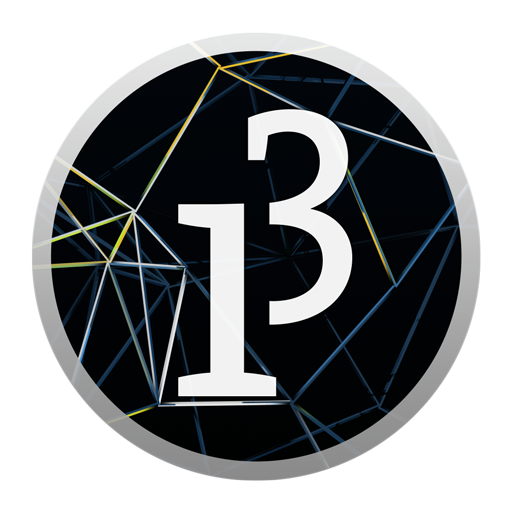
なんでProcessingなの
C言語をコマンドプロンプトの文字だけの真っ黒な画面でやるよりも楽しいしわかりやすいと思うからです． そして，環境構築が楽だからです．
ProcessingをDLしよう
こちらのサイトで環境を選べばDLが始まります． DLしたファイルを開いて指示に従えばDL完了です．Processing.exeとかProcessing.appを実行すれば，もうさっそくプログラム作成ができます．
Q&A
Q:日本語が打てねぇぜ，あと文字小さい
- ファイル/設定/から日本語が使えるフォントと選びます．文字サイズもそこで変更できます．
Q:簡単すぎてつまらん
- 発展チャプターを用意してあります．
Q:いやなんもわからん
- 先輩かわかる同級生に聞いてみよう！
図形を描いてみよう
今回の目標
円や長方形で構成された簡単な絵が描ける．
具体的には次の絵を描くことが目標です．

実際に図形を描く
コードを書いてみよう
次のコードを入力してみましょう．最後のセミコロン(;)を忘れずに．
size(500,400);

実行しよう
ウィンドウに再生マークのボタンがありますね．クリックすると実行されます．新しく画面(ウィンドウ)が表示されました．

- 実行ボタンを押してもウィンドウが表示されなかったらもう一度コードを確認してみよう．どこかが間違っているはず．
数字を変えてみよう
size(500,400);
の(500,400)と入力したところを別の数字にしてみましょう．
例えば
size(600,100);
と入力して，実行をすると

横長になりました．
さて，お気づきの方もいるかもしれませんが，このsize(数字,数字);というのは画面のサイズを指定しています．具体的には，size(x,y);というコードは画面の横の長さをx，縦の長さをyにする，という意味を持っています．
コードを書いてみようその2
次のコードを入力してみましょう．入力し終わったら，実行ボタンを押して実行しましょう．
size(500,400);
rect(100,200,300,100);
次のような画面が表示されます．

画面内に白い長方形が描かれました．数字をいろいろ変えて，この数が何を意味するのかを考えてみてください．
rectの正体
rect(a,b,c,d)を実行すると座標(a,b)を左上とする，横の長さc，縦の長さdの長方形が描かれます．

ここでの座標というのは数学でもでてきた平面での場所を表す数字です．上の図のように，画面の左上を原点としProcessingの世界では，xは右方向が正，yは下方向が正，と決まっています．y座標が下に行くほど増えていくところに注意です．
- Processingに対して「画面描いて！」とか「正方形描いて！」みたいに命令しているので，「命令」と呼びます．
練習
演習2-1
横600,縦300のウィンドウに，左上の座標が(100,50)で横の長さが200,縦の長さが100の長方形を描け．
演習2-2
横450,縦600のウィンドウに，左上の座標が(100,100)で右下の座標が(400,400)の正方形を描け．
解答例
解答例:コードを書いてから答えをみよう！
size(600,300);
rect(100,50,200,100);
演習2-2：rect(a,b,c,d)のc,dは座標ではなく辺の長さです．辺の長さは400-100=300なので，cとdは300にする必要があります．
size(450,600);
rect(100,100,300,300);
他の図形を描く
さきほどのrect()の他にも，三角形などを描く方法があります．
表にまとめてありますが，これらを頑張って覚える必要はありません．なぜなら，リファレンスをみればわかるからです．
| 方法 | 起こること |
|---|---|
point(x,y) | 座標(x,y)に点をうつ |
line(x1,y1,x2,y2) | 座標(x1,y1)と座標(x2,y2)が両端の線分を描く |
ellipse(x,y,a,b) | 座標(x,y)を中心に横軸がa，縦軸がbの楕円を描く1 |
triangle(x1,y1,x2,y2,x3,y3) | (x1,y1) と (x2,y2) と (x3,y3) をつなぐ三角形を描く |
fill(r,g,b) | この命令の後に描く図形の内部は色(r,g,b)2で塗られる |
stroke(r,g,b) | この命令の後に描く図形の輪郭は色(r,g,b)で塗られる |
- 上の表のxやaのことを引数(引数)と呼びます．
aとbを同じ数cにすれば直径がcの円が描けます．例えばellipse(10,10,7,7)は中心(10,10)直径7の円を描きます．
色の指定方法については補足資料をご覧ください
fillの使い方を示します．
size(400,200);
ellipse(100,100,80,80);
fill(255,0,0);//ここから後に描く図形を赤く塗る
ellipse(300,100,80,80);

ここで注意するのが，プログラムは上から下へ順番に実行されるということです．
練習
演習2-3
画像のように日本の国旗をかけ．アスペクト比などは厳密でなくて良い．

解答例
解答例
size(600,400);
fill(255,255,255);
rect(0,0,600,400);
fill(255,0,0);
ellipse(300,200,300,300);
作る
数種類の図形でオリジナルの絵(思いつかなかったら信号)を書いてみましょう．
私は顔を書いてみました．
size(600,600);
ellipse(300,300,200,200);
fill(0,0,0);
ellipse(250,280,50,50);
ellipse(350,280,50,50);
line(250,350,350,350);
実行結果はこちらです．
変数
今回の目標
変数の使い方と，使う利点がわかる．
定義と代入
変数とは
別の言葉を使って例えるのならば箱です．何かを入れて保管(記憶)しておくことができます．
変数の宣言
int a;
これでaという名前の変数が作られました．intは「整数を入れる変数を作れ」という意味です．
実行してでてきた小さいウィンドウ1は無視しましょう．
size();関数で何も設定しなかったので最小サイズのウィンドウがでてきてしまいました．
変数に数を入れる
このままだと，変数が空っぽなので数を入れます
int a;
a=6;
a=6の行が追加されました．これでaという名前の変数に6という数字が入りました．注意するのは，ここでのイコール(=)は，等しいという意味ではありません．イコールの右にある数をaに「代入する」という意味です．
ところで，本当にaに6が入っているかどうか気になりますね．そこで，aという変数の中に何が入っているかを確認します．
int a;
a=6;
print(a);
下の黒いところがコンソールです．
print();命令は，コンソールに表示させる命令です．
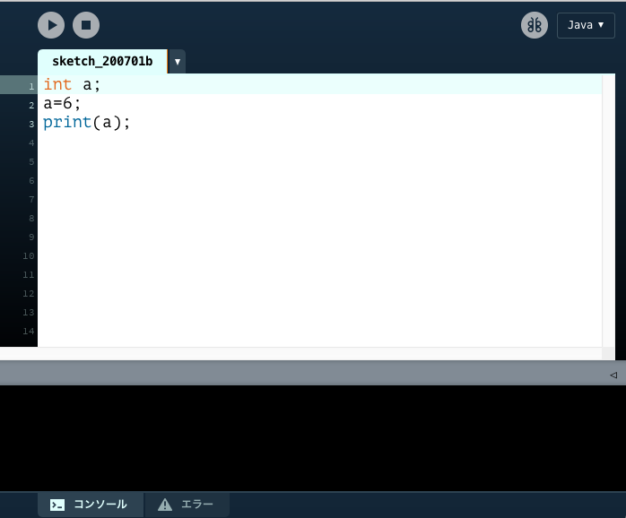
実行ボタンを押すとそこに6と表示されます．
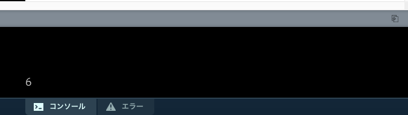
地味ですね．別の数字も試して，結果がどうなるかを確認しましょう．また，次のコードのように定義と代入を同時に行うことができます．
int a=6;
print(a);
変数は別に一文字でなくてもよいです．
int apple=6;
int grape=4;
print(apple,grape);
このように変数に適切な名前を付けることで何を表しているのかを分かりやすくできます．
変数の命名ですが，
- アルファベット(大文字小文字問わない)かアンダーバーで始まる
- 一文字目以外はアルファベット，数字，アンダーバーのみで構成されている ことがルールです．
int w1000000007ushitapunikiakun;//よい
int _x;//よい
int 3_e;//エラー
変数を使用するときのエラー
今度は値を代入せずに表示させます．
int a;
print(a);
実行すると
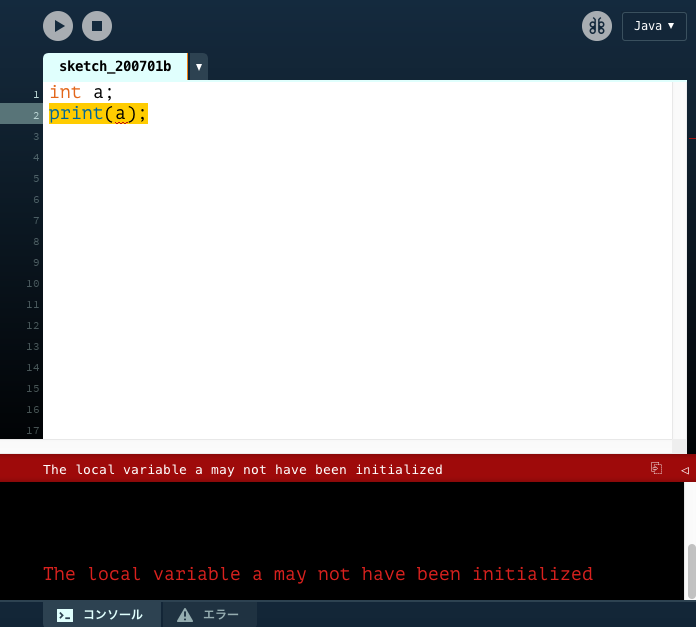
英語ができてました．エラー文といいます．これを読んで何がエラーの原因なのかを考えます．英語が読めなかったらGoogle先生に任せましょう．
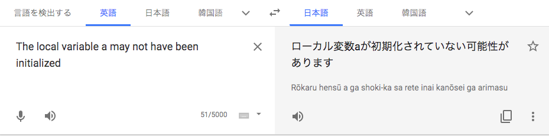
原因はaに何も値を入れていないことです．「aという変数を作ったけれど，中身は空っぽなので表示できません！」という意味です．変数の中身を使う場合は中身を入れてあるかに注意しましょう．
また，int aでaという名前の変数を作らなかった場合もエラーになります．
a=28;
print(a);
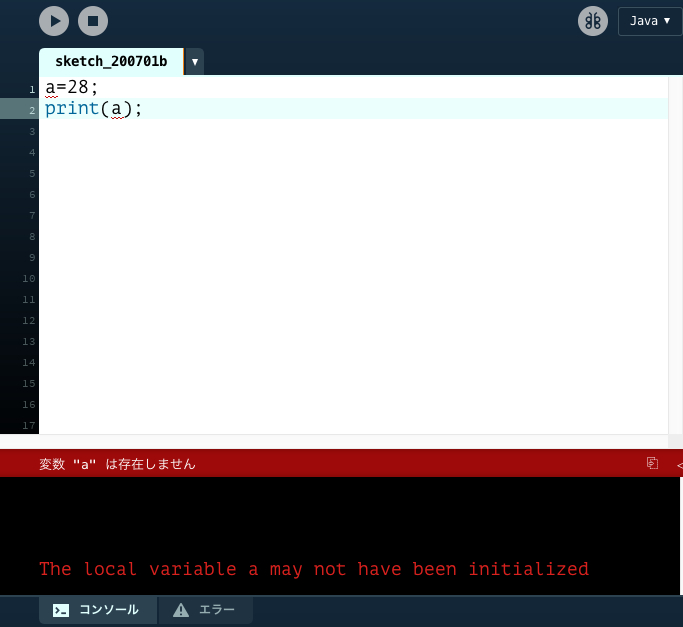
他にも，同じ名前の変数は作れないルールがあります．2．
int a;
int a;//変数名は被ってはいけない(エラー)
a=2;
厳密には，同じブロック内でなければ問題ありませんが，今は気にしなくてよいです．
式で代入
int a;
a=1+3;
print(a);
このように式で代入することもできます．
| すること | 演算子 | 例 | aの値 |
|---|---|---|---|
| 足し算 | + | a=24+41 | 65 |
| 引き算 | - | a=5-12 | -7 |
| 掛け算 | * | a=25*8 | 200 |
| 割り算3 | / | a=76/19 | 4 |
| 割った余り4 | % | a=25%4 | 1 |
整数同士で割り算をすると，小数点以下は切り捨てられます．10/3=3,3/4=0となります．
数学でいうと合同式のmodのようなものです．例えば，整数aの一の位はa%10で得ることができます．
変数を使って計算することも可能です．電卓みたいですね．
int grape=3;
int apple=5;
int fruit=grape+apple;
print(fruit);
int side=9;
int volume=side*side*side;
print(volume);
演算は括弧を使うことも可能です．
int a=5,b=3;
int c=(a+b)*(a-b);//8*2
print(c);//16
次のコードを確認しましょう．
int a=5;
a=a+6;
print(a);
このプログラムは少しトリッキーに見えるかもしれませんが，理路整然とシュミレーションしてみれば難しくありません．aという名前の変数にa+6の結果を代入するという意味ですが，このときのaは5ですので，aには5+6の11が代入されます．
プログラムは上から下へ順番に，書いてあること通りに実行されていきます．これは，当たり前のように感じますが，慣れていない頃は意外と忘れがちです．
また，セミコロンで区切ってさえあれば同じ行に命令を連ねることができますが，これは左から順番に実行されていきます．
次のソースコードでは，a=bとb=aが同じ行にあり，同時に実行するように見えるかもしれませんが，そんなことはありません．a=b;のあとに改行したコードと全く同じ意味になります．
int a=5,b=3;
a=b;b=a;
print(a,b);
int a=5,b=3;
a=b;
b=a;
print(a,b);
逆に，一行に詰め込むことも可能です．
int a=5,b=3;a=b;b=a;print(a,b);
演習3-1
次のプログラムを実行して表示される数はいくつか．
int a=5; int b=3; a=a+b; b=a-b; print(b);
演習3-2
二つの変数の値を入れ替えるにはどうすればよいか
int a=5,b=3; //何らかの処理 print(a,b);//a=3,b=5を得たい
解答
解答
a=a+b;//a=5+3 aが8
b=a-b;//b=8-3 bが5
演習3-2： 別の変数を用意すると簡単に実現できます
int a=5,b=3;
int t;
t=a //tにaの値を取っておく
a=b; //aに上書きされても
b=t; //tにもともとのaの値が残っている
print(a,b);
変数の活用例
打つのが大変なのでコピペ推奨です．
size(600,600);
ellipse(300,300,200,200);
fill(0,0,0);
ellipse(250,280,50,50);
ellipse(350,280,50,50);
line(250,350,350,350);
チャプター2で出てきた顔です． どうしてもこの顔が気に入らなければ別の絵を用意してもらって構いません．
この顔をもう少し右に表示させたくなったとします．そうなると，顔を作っている全ての関数のx座標の値を変えなければなりません．手間です．さらに変更したくなったらまたまたひとつずつ書き換えなければなりません．非常に面倒ですね．そこで，次のように変数を使います．
size(600,600);
-ellipse(300,300,200,200);
fill(0,0,0);
-ellipse(250,280,50,50);
-ellipse(350,280,50,50);
-line(250,350,350,350);
これで，一行目のxとyの初期値さえ変えれば，顔の位置を移動させることができるようになりました．このように，複数の場所に関与して来る数は変数にしておくと汎用性が高くなります．
動きを作る
目標
図形を動かすことができる

setup()とdraw()
//ここで変数の宣言をする
void setup(){
//初めの設定：変数への代入，size()命令など
}
void draw(){
//ここがずっと繰り返される
}
急にvoid setup()やらdraw()が出てきて困惑するかもしれませんが，これはそういうものだと思ってください．
例を次に示します．
int x=300,y=300;
void setup(){
size(600,600);
}
void draw(){
ellipse(x,y,100,100);
x=x+1;
}
draw()に円を描くプログラムとx=x+1が入っています．draw()の中は繰り返されるのでxの値がどんどん増えていきます．print(x)を後ろにおいてみるとよくわかります．
draw()は，だいたい1秒間に60回実行されています．つまり，xは1秒で約60増えています．

この実行結果ですが，xをずらしながら円を描いているので残像がついています．
そこで，draw()の初めで白い画面いっぱいの正方形で画面を塗りつぶして，一回まっさらの状態にします．
int x=300,y=300;
void setup(){
size(600,600);
}
void draw(){
fill(255,255,255);
rect(0,0,600,600);
fill(0,0,0);
ellipse(x,y,100,100);
x=x+1;
}
これで，残像がなくなりました．実行結果はこのチャプターの頭にあるgif画像です．
さらに動かす
前回使用した顔を描くプログラムについても同じことができます．
int x=300;
int y=300;
void setup(){
size(600,600);
}
void draw(){
fill(255,255,255);
rect(0,0,600,600);//画面を真っ白に
ellipse(x,y,200,200);
fill(0,0,0);
ellipse(x-50,y-20,50,50);
ellipse(x+50,y-20,50,50);
line(x-50,y+50,x+50,y+50);//顔を描く
x=x+1;
}
左方向や斜め方向に移動させるにはどうすればよいでしょうか．また，等速直線運動ではなく等加速度運動にするにはどうすればようでしょうか．
次のプログラムでは，x方向とy方向のそれぞれの速度を変数として定義しています．
x=x+2;y=y+1;のように直接書きたくもなりますが，これを変数として宣言しておくことで汎用性が高いプログラムになります．
int x=300,y=300;//座標
int vx=2,vy=1;//速度
void setup(){
size(600,600);
}
void draw(){
//中略
x=x+vx;
y=y+vy;
}
具体的には，次のプログラムのように加速度を導入したときに，これらの数を変数として宣言しておくと，初期値の設定がはじめの数行でまとめてできるので楽です．
int x=300,y=300;//座標
int vx=-10,vy=0;//速度
int ax=1,ay=0;//加速度
void setup(){
size(600,600);
}
void draw(){
//中略
vx=vx+ax;
vy=vy+ay;
x=x+vx;
y=y+vy;
}
ところで，ここまで作ってきたプログラムは顔が画面外に出てしまうともう戻ってきません．もし画面外に出たとき，戻ってくる，という処理が欲しいですよね？
それを実現するのが次のチャプターで出てくるif文です．
おまけ
int x=300,y=300;
void setup(){
size(600,600);
}
void draw(){
fill(255,255,255);
rect(0,0,600,600);//画面を真っ白に
x=mouseX;
y=mouseY;
ellipse(x,y,200,200);
fill(0,0,0);
ellipse(x-50,y-20,50,50);
ellipse(x+50,y-20,50,50);
line(x-50,y+50,x+50,y+50);//顔を描く
}
分岐処理
目標
次の動きをするプログラムを作成できる
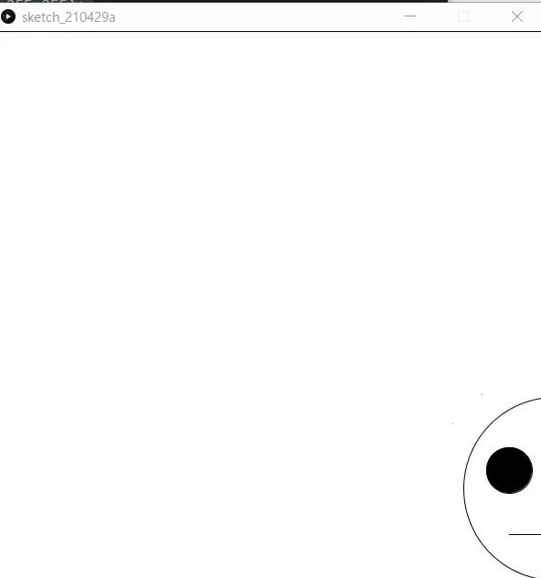
いつ使うのか
ゲームとかでボタンを押すとキャラクターが動きますね．ボタンが押されたときと押されていないときで処理が違います．「もし〜ならこの処理をする」というのが欲しいですね．それがこれから紹介するif文です．
もし〜だったら
「もしAだったらBをする」をプログラムにすると次のコードになります．
if(A){
B
}
Bには命令が入り，Aには条件式が入ります．
| 条件式 | 日本語 |
|---|---|
a==b | aとbが等しい |
a>b | aがbより大きい |
a>=b | aがb以上 |
a<b | aがbより小さい |
a<=b | aがb以下 |
aとbが等しい時の条件式が=ではなく**==**であることに注意です．
次のプログラムでaの値を変えたり条件式を変えたりして動作を確認しましょう．
int a=100;
if(a==100){ // もし、aが100なら
print("aは100です");
}
if(a>100){// aが100より大きいなら
print("aは100より大きいです");
}
また，条件を連ねたいときは&&を使います．"かつ"と読み替えることができます．次のプログラムはaが100以上，かつaが200未満，という条件になります．
int a=100;
if( 100<=a && a<200 ){ // aが100以上200未満なら
print("aは100以上200未満です");
}
"かつ"(&&)に対して，||1は"または"を表す記号です．
次のプログラムはageが7である，またはageが5である，またはageが3であるときに"七五三"を表示するプログラムです．
見慣れない記号かもしれません，パイプラインと呼びます．キーボードの右上の方にあります．
int age=10000;
if(age==7 || age==5 || age==3){
print("七五三");
}
練習
演習5-1
int score=任意の整数;に対して，scoreが60未満の場合に「留年」と表示するプログラムを作成しなさい．
演習5-2
演習5-1に加えて，scoreが100を超えていた場合(101以上)も"留年"と表示するプログラムを作成しなさい．
解答例
解答例:コードを書いてから答えをみよう！
if(score<60){
print("留年");
}
演習5-3:
if(score<60||score>100){
print("留年");
}
else,else if
else（日本語: 他の）は文字通りそうでないときの処理を書きます．
int score=74;
if(score<60){
print("不可");
}else{
print("合格");
}
次の2つのプログラムを比較してみましょう
int score=74;
if(score<60){
print("不可");
score=60;
}else{
print("合格");
}
int score=74;
if(score<60){
print("不可");
score=60;
}
if(score>=60){
print("合格");
}
実際に使う
前回のチャプターで作った顔が動くプログラムで，xが無限に増え続けるので画面外にいってしまいます．そこでif文を使うと，右端にいったら左端から出てくるようにすることができます．
int x=300;
int y=300;
void setup(){
size(600,600);
}
void draw(){
fill(255,255,255);
rect(0,0,600,600);//画面を真っ白に
ellipse(x,y,200,200);
fill(0,0,0);
ellipse(x-50,y-20,50,50);
ellipse(x+50,y-20,50,50);
line(x-50,y+50,x+50,y+50);//顔を描く
x=x+3;
if(x>700){//もしxが700を超えたら
x=-100;//xを-100に設定する
}
}
y座標についても同じことをしてやると，古いDVDプレイヤーにスクリーンセーバーにありそうなちょっと面白い動きになります．
int x=300;
int y=300;
int vx=9,vy=6;
void setup(){
size(600,600);
}
void draw(){
fill(255,255,255);
rect(0,0,600,600);//画面を真っ白に
ellipse(x,y,200,200);
fill(0,0,0);
ellipse(x-50,y-20,50,50);
ellipse(x+50,y-20,50,50);
line(x-50,y+50,x+50,y+50);//顔を描く
x=x+vx;
y=y+vy;
if(x>700){//もしxが700を超えたら
x=-100;//xを-100に設定する
}
if(y>700){//もしyが700を超えたら
y=-100;//yを-100に設定する
}
}
Chapter 6:繰り返し処理
まえおき
processingで次の画像のようなものを描くプログラムを作るにはどうすればよいでしょうか．

ellipse命令を羅列して地獄になる予感がします．そこで，同じ処理や似たような処理を行うのがwhile文，for文です．
while文
whileには「～の間」という意味があります(接続詞として逆接の意味も持ちますが)． プログラム上でも意味は同じで，「Aが正しい間，Bを繰り返し実行」する場合は
while(A){
B
}
と書きます．Aにはif文でも使用した条件式が入ります．
| 条件式 | 日本語 |
|---|---|
a==b | aとbが等しい |
a>b | aがbより大きい |
a>=b | aがb以上 |
a<b | aがbより小さい |
a<=b | aがb以下 |
プログラムを見てみましょう．
int hp=20;
int attack=6;
while(hp>0){
hp=hp-attack;
print(hp);
}
print("GAME OVER");
動作の確認をするために，一個ずつ命令の通りにしたがってシュミレーションしてみましょう．
注意するのは，hp>0による，まだ繰り返すか否かを中括弧の終わりのところで審査することです．p=hp-attackでもしhp>0を満たしてなくても，中括弧が閉じているところまでの命令は実行され，print(hp);を実行した後にhp>0の判定が行われます．
while文を使えば，次のようにすることで100回繰り返すことができます．
int i=1;
while(i<=100){
print(i);
i++;
}
ここで，変数iは繰り返し回数を表していますが，繰り返し処理を行うたびにいちいち準備するのは大変です． そこで，便利なのがfor文です．
## for文
for文の書式は次の通りです．
for(変数の宣言;条件式;1回繰り返したあとに行う処理){
//処理
}
for(int i=1;i<=100;i++){
print(i);
}
つまり，上のコードは1回for文内を実行してiを+1することをi<=100の間繰り返す，という意味になります．
while文と違って，
- 繰り返し用の変数の宣言
- 繰り返し用の変数への加算
- 繰り返しの条件 を同時に設定することができるます．
使い分けですが，繰り返す回数が決まっている場合はすっきり書けるfor文，そうでない場合はwhile文を使うことが多いです．
演習6-1
1から2020までの整数の和は2041210ですが，これをfor文かwhile文を使ったプログラムによって計算しなさい．
演習6-2
1以上10000以下の整数で，6の倍数である，または9の倍数である整数の個数を求めなさい．
解答
解答
演習6-1:
int sum=0;
for(int i=1;i<=2020;i++)sum+=i;
print(sum);
演習6-2:2222
int cnt=0;
for(int i=1;i<=10000;i++)if(i%6==0||i%9==0)cnt++;
print(cnt);
これは，10000/6+10000/9-10000/18と等しいです．
二重for文
size(500,500);
for(int x=0;x<=500;x+=100)ellipse(x,000,100,100);
for(int x=0;x<=500;x+=100)ellipse(x,100,100,100);
for(int x=0;x<=500;x+=100)ellipse(x,200,100,100);
for(int x=0;x<=500;x+=100)ellipse(x,300,100,100);
for(int x=0;x<=500;x+=100)ellipse(x,400,100,100);
for(int x=0;x<=500;x+=100)ellipse(x,500,100,100);
上のfor文は
size(500,500);
for(int y=0;y<=500;y+=100){
for(int x=0;x<=500;x+=100){
ellipse(x,y,100,100);
}
}
こうまとめられますね．
演習6-3
次の画像のように階段状に円を描くにはどうすればよいでしょうか．

解答
解答
size(700,700);
for(int y=100;y<=600;y+=100){
for(int x=100;x<=y;x+=100){
ellipse(x,y,100,100);
}
}
Chapter 7:関数を作る
関数とは
実は今まで使ってきたrect()やfill()，print()などは関数と呼ばれるものです．
例えば，rect(x,y,a,b)を実行した場合，
座標(x,y)を左上の頂点として，横a縦bの長さである長方形が描かれます．print(S);(Sは文字列)は，文字列Sがコンソールに表示されます．
このように，関数はいくつかの入力(rectの例だとx,y,a,b)に対して何かを行うものです．
そして，この関数は自分で作ることができます．
Chapter 8:配列
まとめて管理
シューティングゲームなどで，100個の弾の座標を管理したいときに次のように変数を定義していては大変です．
int x1= 4 ,y1=54;
int x2=15 ,y2= 4;
int x3=26 ,y3=34;
...
int x99=23,y99=2;
int x100=3,y100=4;
そこで配列です．宣言は次のようにできます．
int x[]=new int [100];
int y[]=new int [100];
型名 変数名[]=new 型名 [要素数];
new 型名[要素数]を忘れないようにしましょう．
int a[]=new int [4];
a[0]=3;
a[1]=1;
a[2]=4;
a[3]=1;
print(a[2]);
変数名[インデックス]で配列にアクセスができます．インデックスは0から要素数-1までの整数で指定します．
要素数が4の場合，a[0],a[1],a[2],a[3]の4つの要素が使える，という意味になります．a[4]は使えません(エラーになります)． インデックスが0から始まることに注意です．
int a[]=new int [4];
a[0]=3;
a[1]=1;
a[2]=4;
a[3]=1;
for(int i=0;i<4;i++){
a[i]=a[i]+1;
println(a[i]);
}
配列は一度に処理をするのに非常に便利です(上の例だとすべてに1を加算している．) また，記録機能としても優秀です．
int a[]=new int [10];
int a[0]=1;
for(int i=1;i<10;i++)a[i]=a[i-1]*2;
for(int i=0;i<10;i++)println(a[i]);
演習8-1
フィボナッチ数列の第20項目はいくつか． ただし，フィボナッチ数列は，1,1,2,3,5,8,13,21,...のように初めの二項が1で，それ以降は前の二項の和となっている数列のことである．
解答
解答例:コードを書いてから答えをみよう！
演習8-1:6765
int a[]=new int [30];
a[1]=1;a[2]=1;
for(int i=3;i<=20;i++)a[i]=a[i-1]+a[i-2];
print(a[20]);
Chapter 9:クラスとメンバ
配列からクラスへ
配列は便利ですが，複数の情報を持つものが複数あると少しかさばります．具体的には座標，速度，加速度の3要素を持つ直線上の物体が10個あるときに，
int x[]=new int [10];//座標
int v[]=new int [10];//速度
int a[]=new int [10];//加速度
このようにコードをかくことができますが，少し冗長ですよね．というのも，x[i]とy[i]とa[i]は同じ物体についての情報であるのに別の配列に入っているという点で少し不便です．そこでそれらをまとめて扱う"クラス"というものを紹介します．
class object{
double x;
double v;
double a;
}
これでobjectというデータの型が使えるようになります．
object ball;
ball=new object();
上のコードで，ballという名前のobject型の変数(のようなもの)が宣言されます．普通のint型などの変数とは違って=new クラス名();があることに注意です
参照と代入は次のように行えます．
ball.x=2.2;
ball.v=-3.2;
ball.a=0.1;
print(ball.x);
配列にする場合，少し手順が複雑になります．
object ball[]=new object[100];
for(int i=0;i<100;i++)ball[i]=new object();
ball[0].x=2.2;
ball[0].v=-3.2;
ball[0].a=0.1;
Chpater 1:設計を考えよう
ゲームの構想を練る
完成したゲームがこちらになります．

実際にゲームを作るときにも，ゲーム画面がどんな感じであるかを想像できなければ，プログラミングができません．ということで，上のgif画像のゲームを想像してたとしましょう．これは対戦型ゲームで，p●ngというゲームのパクリです．（上のgif画像でイメージが沸かない場合は調べてみましょう．）
さて，構成を見ていきましょう．このゲームは，
- ボール
- バーが二つ の図形でできています． そして，これらがどう動くかを考えます． 書き出してみると，
- バーは十字キーで操作をする
- ボールを一定の方向に動かす
- ボールが壁に当たったら跳ね返る
- ボールがバーに当たったら跳ね返る
- バーを過ぎたら終了 といったところでしょうか． あとはそれぞれをどう処理するかを考えます．
Chapter 2:バーとボールを作ろう
float ballX=400;
float ballY=400;
float ballRad=20;
float mybarX=200;
float mybarY=700;
float mybarW=100;
float mybarH=30;
float combarX=170;
float combarY=100;
float combarW=100;
float combarH=30;
void setup(){
size(800,800);
}
void draw(){
clear();
ellipse(ballX,ballY,ballRad*2,ballRad*2);
rect(mybarX,mybarY,mybarW,mybarH);
rect(combarX,combarY,combarW,combarH);
}
Chapter 3:バーを動かそう
float ballX=400;
float ballY=400;
float ballRad=10;//半径
float ballAng=PI/6;//角度
float ballSpeed=6;//ボールのスピード
float mybarX=200;
float mybarY=700;
float mybarW=100;
float mybarH=30;
float combarX=170;
float combarY=100;
float combarW=100;
float combarH=30;
void setup(){
size(800,800);
}
void draw(){
clear();
barMove();
ballMove();
ellipse(ballX,ballY,ballRad*2,ballRad*2);
rect(mybarX,mybarY,mybarW,mybarH);
rect(combarX,combarY,combarW,combarH);
}
void ballMove(){
float newballX=ballX+cos(ballAng)*ballSpeed;
float newballY=ballY+sin(ballAng)*ballSpeed;
if(newballX<ballRad){
newballX=ballRad-newballX;
ballAng=PI-ballAng;
}
if(newballX>=width-ballRad){
newballX=(width-ballRad)*2-newballX;
ballAng=PI-ballAng;
}
if(newballY+ballRad>mybarY){
if(mybarX<newballX+ballRad && newballX-ballRad<mybarX+mybarW){
ballAng=-ballAng;
}
}
if(newballY-ballRad<combarY+combarH){
if(combarX<ballX+ballRad && newballX-ballRad<combarX+combarW){
ballAng=-ballAng;
}
}
ballX=newballX;
ballY=newballY;
}
void barMove(){
if(keyPressed == false)return;
if(keyCode==LEFT)mybarX-=10;
else if(keyCode==RIGHT)mybarX+=10;
}
Chapter 4:ボールを動かそう
float ballX=400;
float ballY=400;
float ballRad=10;//半径
float ballAng=PI/6;//角度
float ballSpeed=6;//ボールのスピード
float mybarX=200;
float mybarY=700;
float mybarW=100;
float mybarH=30;
float combarX=170;
float combarY=100;
float combarW=100;
float combarH=30;
void setup(){
size(800,800);
}
void draw(){
clear();
barMove();
ballMove();
ellipse(ballX,ballY,ballRad*2,ballRad*2);
rect(mybarX,mybarY,mybarW,mybarH);
rect(combarX,combarY,combarW,combarH);
}
void ballMove(){
float newballX=ballX+cos(ballAng)*ballSpeed;
float newballY=ballY+sin(ballAng)*ballSpeed;
if(newballX<ballRad){
newballX=ballRad-newballX;
ballAng=PI-ballAng;
}
if(newballX>=width-ballRad){
newballX=(width-ballRad)*2-newballX;
ballAng=PI-ballAng;
}
if(newballY+ballRad>mybarY){
if(mybarX<newballX+ballRad && newballX-ballRad<mybarX+mybarW){
ballAng=-ballAng;
}
}
if(newballY-ballRad<combarY+combarH){
if(combarX<ballX+ballRad && newballX-ballRad<combarX+combarW){
ballAng=-ballAng;
}
}
ballX=newballX;
ballY=newballY;
}
void barMove(){
if(keyPressed == false)return;
if(keyCode==LEFT)mybarX-=10;
else if(keyCode==RIGHT)mybarX+=10;
}
発展:平方根
コンピュータ上での色の表現
色の指定
Processingではfill命令やstroke命令で描画する色をしてすることができます．(r,g,b)はred,green,blueの光の三原色の混じり具合を表しています．それぞれ0~255の整数値で設定できます．
絵具とは違い，光であるので色が混じると白色に近くなっていきます．次の表に示します．
| (r,g,b) | 色 |
|---|---|
(000,000,000) | 黒 |
(255,255,255) | 白 |
(255,000,000) | 赤 |
(000,255,000) | 緑 |
(000,000,255) | 青 |
(255,255,000) | 黄 |
(255,000,255) | 紫 |
(000,255,255) | 水 |
デザインの話になりますが，上の表にあるような極端に振った(255とか0)値を含んだ色を使うと，主張が激しく感じます(個人差はありますが)．意図的にそうしたい場合を除いて，実際に色を使う場合は，そのような色を避けて優しい色遣いをするとよいです．
また，上の表は覚える必要はなく，Processingのツールタブから色選択...を選択すると下の画像のようなウィンドウが出てきます．

これを使えば使いたい色のrgb値がわかります．
変数の詳しい話
整数型，浮動小数点型
chapter2ではintで整数をいれる変数を作れることがわかりました．これによって作られた変数をint型変数，といいます．あるいは，整数が入るので単に整数型とも言います．
float a=1.5;
float b=1.5;
print(a*b);//2.25
上のサンプルのように，intの代わりにfloatを使うと小数を代入することができます．
int a=5;
int b=3;
println(a/b);//1
println(float(a)/b);//1.66666...
整数型同士の割り算は小数点以下を切り捨てられてしまうので，割り算をする前にfloat(a)でfloat型に変換し，切り捨てを行わないようにします．
さらに精度を良くして数を扱う場合は整数ならlong型，小数ならdouble型を使います．
| 型名 | 代入できる値 |
|---|---|
| int | -2147483648から2147483647の整数 |
| long | -9223372036854775808から9223372036854775807の整数 |
| float | 小数 |
| double | float型よりも精度のよい小数 |
long型に値を代入する場合，末尾にLをつけないとエラーになることがあります．
long a=9223372036854775807L;//Lをつける
演算子
省略
int apple=0;
apple=apple+2;
apple=apple-3;
apple=apple*5;
apple=apple/7;
apple=apple%11;
上の式のように自分自身に対する計算は，短く書くことができます．
int apple=0;
apple+=2;
apple-=3;
apple*=5;
apple/=7;
apple%=11;
また，1を足すまたは引く場合はさらに短く書くことができます．
int apple=0;
apple++;//apple=apple+1と同じ
apple--;//apple=apple-1と同じ
++を先に書くこともできます．これらは挙動が違います．
int a=0;
print(a++);
print(a);
a=0;
print(++a);
print(a);
bit演算子
bitにかかわる演算子です．
| すること | 演算子 | 例 | aの値 |
|---|---|---|---|
| AND | & | a=1&3 | 1 |
| OR | ` | ` | `a=1 |
| XOR | ^ | a=1^3 | 2 |
| 左にビットシフト | << | a=1<<3 | 8 |
| 右にビットシフト | >> | a=4>>1 | 2 |
例えば，変数aの2ビット目(一番右を0ビット目とする)が1立っているかどうか(1であるか)を確かめるには，
if((a&(1<<2))!=0)print("aの2ビット目は立っています");
で調べることができます．
応用すると，部分集合が全列挙できます．
int a[]={0,1,2,3,4};
int size=5;
for(int i=0;i<(1<<size);i++){
for(int k=0;k<size;k++){
if((i&(1<<k))!=0){
print(a[k]);
}
}
print("\n");
}
Scratchの命令に置き換えると？
| ブロック | Processing |
|---|---|
| 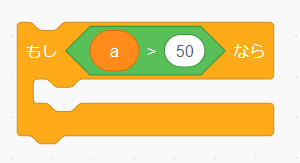 | if(a>50){} |
| 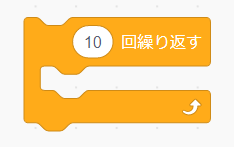 | for(int i=0;i<10;i++){} |
| 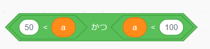 | 50<a && a<100 |
| 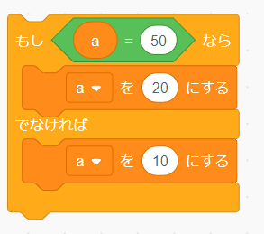 | if(a==50){}else{} |
| 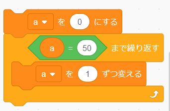 | a=0;while(!a==50){a=a+1;} |
| 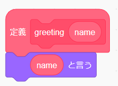 | void greeting(string name){print(name);} |
サンプルプログラム
全てShibaken28によって書かれました．一部コードの可読性が著しく低いものがあります．
時計

ソースコード
void setup(){
size(600,600);
}
void draw(){
fill(0);
rect(0,0,width,height);
int hy=height/24;
int my=height/60;
int sy=height/60;
stroke(170);
fill(255);//白色
for(int i=1;i<=hour();i++)rect(0,600-hy*i,200,hy);
for(int i=1;i<=minute();i++)rect(200,600-my*i,200,my);
for(int i=1;i<=second();i++)rect(400,600-sy*i,200,sy);
}
歪み

ソースコード
int r=40;
void setup(){fullScreen();}
void draw(){
clear();noStroke();
float X=mouseX,Y=mouseY;
for(int x=0;x<=width;x+=r){
for(int y=0;y<=height;y+=r){
float tx=x,ty=y,d=PI/2;
float dx=X-x,dy=Y-y;
float l=sqrt(dx*dx+dy*dy);
if(X-x!=0)d=atan(dy/dx);
else if(Y>y)d=-d;
if(X-x>0)d=d-PI;
tx+=cos(d)*r*log(l);ty+=sin(d)*r*log(l);
circle(tx,ty,r);
}
}
}
波

ソースコード
int w=100;
float wave[]=new float[w];
float y=400;
float t=0;
float x;
void setup(){
fullScreen();
x=displayWidth;
}
void draw(){
float ww=x/w;
background(0);
strokeWeight(ww-1);
stroke(0,255,255);
for(int i=0;i<w;i++){
wave[i]=0;
float T=120,la=630;
float A=25;
wave[i]+=A*sin(2*PI*(t/T-i*ww/la));
T=70;la=450;
A=30;
wave[i]+=A*sin(2*PI*(t/T-i*ww/la));
T=-200;la=1050;
A=20;
wave[i]+=A*sin(2*PI*(t/T-i*ww/la));
line(i*ww,wave[i]+y,i*ww,displayHeight);
}
t++;
}
波動

ソースコード
int r=30;
int X, Y, R;
void setup() {
fullScreen();
}
void draw() {
background(0);
fill(255);
noStroke();
R+=10;
if (mousePressed) {
X=mouseX;
Y=mouseY;
R=0;
}
for (int x=0; x<2000; x+=r) {
for (int y=x%7; y<1500; y+=r) {
float d=dist(x, y, X, Y);
circle(x, y, r-(R<d+500&&d<R?(-R+d)/10+50:0));
}
}
}
弾幕避け

ソースコード
class Point{
float x;
float y;
float d;
float s;
float far;
float r;
int t_f=1;
color col;
Point(float p,float q,float t,float v,float h,color c)
{
x=p;
y=q;
d=t;
s=v;
r=h;
col=c;
}
void go(float p,float q,float t,float v,float h)
{
x=p;
y=q;
d=t;
s=v;
r=h;
}
void move()
{
if(s!=0){
x=x+cos(radians(d))*s;
y=y+sin(radians(d))*s;
}
}
void hit()
{
if(time>10)
{
far=sqrt((mouseX-x)*(mouseX-x)+(mouseY-y)*(mouseY-y));
if(far<5){t_f=0;}else{t_f=1;}
}
}
void away()
{
if(x>width){d=180-d;}
else if(x<0){d=180-d;}
else if(y>height){d=-d;}
else if(y<0){d=-d;}
}
}
Point[] zahyo=new Point[512];
int use_n=0;
int rad=0;
int level=1;
float time=0;
float speed=3;
int hankei=10;
int ran=0;
void setup()
{
size(512,512);
background(200);
noStroke();
for(int i=0; i<zahyo.length ;i++)
{
zahyo[i]=new Point(-64,-64,0,0,-1,color(i,random(255),255));
}
run();
}
void draw()
{
fill(255,255,255);
rect(0,0,width,height);
fill(0,0,0);
for(int i=0; i<zahyo.length ;i++)
{
fill(zahyo[i].col);
zahyo[i].move();
zahyo[i].away();
ellipse(zahyo[i].x,zahyo[i].y,zahyo[i].r,zahyo[i].r);
}
fill(0,255,0);
ellipse(width/2,height/2,40,40);
fill(255,0,0);
ellipse(mouseX,mouseY,10,10);
for(int i=0; i<zahyo.length ;i++)
{
zahyo[i].hit();
if(zahyo[i].t_f==0)
{
noLoop();
textSize(64);
text("GAME OVER", 0, 300);
}
}
time += 1;
textSize(32);
text("balls:"+level, 00, 32);
if (time/(20-level/15)==int(time/(20-level/15)))
{
level+=1;
run();
}
}
void incuse()
{
zahyo[use_n].go(width/2,height/2,rad,speed,hankei);
use_n += 1;
if (use_n>=zahyo.length){use_n=0;}
}
void run()
{
speed=1.5;
hankei=10+int(random(0,10));
rad+=7;
zahyo[use_n].go(width/2,height/2,rad,speed,hankei);
incuse();
}
カージオイド

ソースコード
float t=0,x,y;
void setup(){fullScreen();x=displayWidth/2;y=displayHeight/2;}
void draw(){
clear();stroke(255);strokeWeight(3);
for(float i=0;i<6.28;i+=.0523){
float r=200*(1+cos(i)*sin(t)*2),s=200*(1+cos(i+.0523)*sin(t)*2);
for(float j=0;j<6.28;j+=0.419)line(x+r*cos(i+j),y+r*sin(i+j),x+s*cos(i+.0523+j),y+s*sin(i+.0523+j));
}t+=.03;
}
フラクタル

ソースコード
float t=1;
int cnt=0;
void setup(){
fullScreen();
}
void d(float cx,float cy,float s,int c,float rd){
cnt++;
int r=255,g=255,b=255;
fill(r,g,b);
float x1=cx+cos(0+rd)*s,y1=cy+sin(0+rd)*s;
float x2=cx+cos(PI*2/3+rd)*s,y2=cy+sin(PI*2/3+rd)*s;
float x3=cx+cos(PI*4/3+rd)*s,y3=cy+sin(PI*4/3+rd)*s;
triangle(x1,y1,x2,y2,x3,y3);
s/=2;
x1=cx+cos(0+rd)*s;y1=cy+sin(0+rd)*s;
x2=cx+cos(PI*2/3+rd)*s;y2=cy+sin(PI*2/3+rd)*s;
x3=cx+cos(PI*4/3+rd)*s;y3=cy+sin(PI*4/3+rd)*s;
if(c>0){
//d(cx,cy,s,c-1,rd);
d(x1,y1,s,c-1,rd);
d(x2,y2,s,c-1,rd);
d(x3,y3,s,c-1,rd);
}
}
void draw(){
cnt=0;
textSize(100);
background(0);
fill(255);
d(displayWidth/2,displayHeight/2,1000,6,PI/6);
t=PI/3;
}